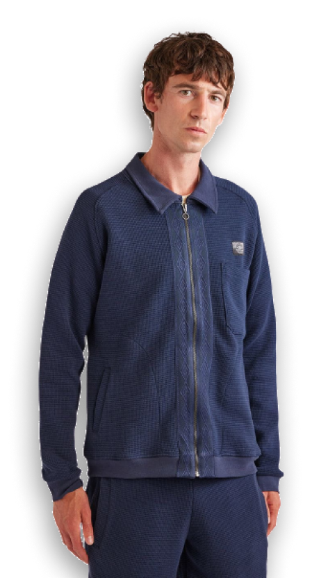
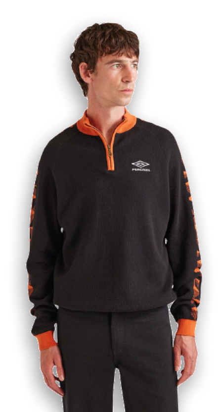
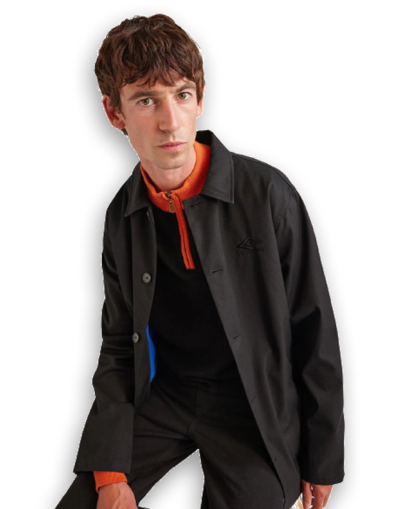
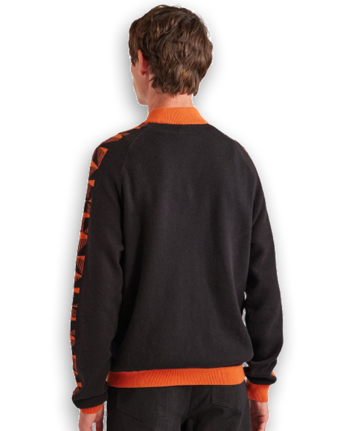
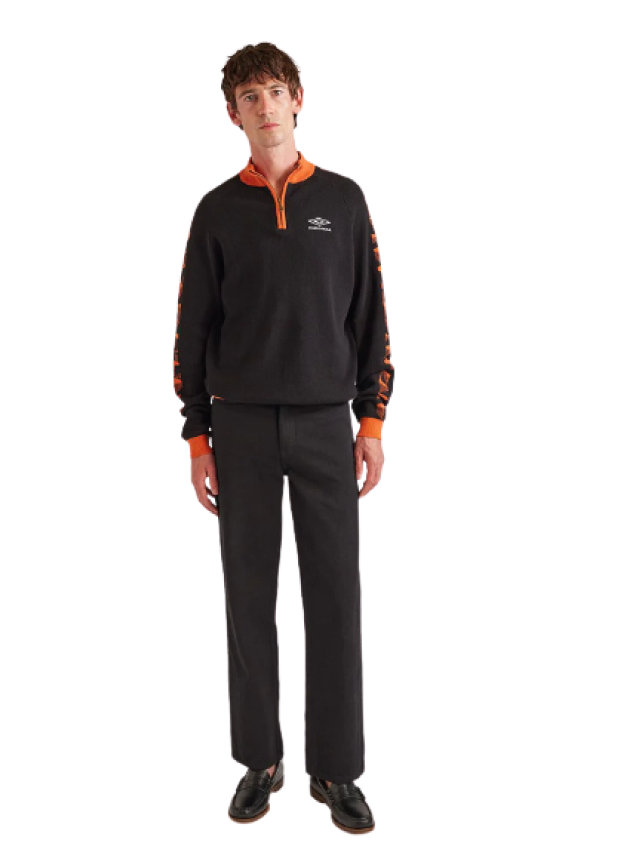

Figma shopping
All
SHIRTING
OUTERWEAR
KNITWEAR
TEES&SWEATS
TROUSERS
ACCESSORIES
GIFT CARDS
VISIT THE SHOWROOM
VFEATURES
Follow us






New Arrivals / Shirt
NAWA Knit Polo Navy Stripe
120.00 EUR
Inspired by vintage football kits, tidy kit 100% cotton knit with logo embroidery at chest. Afters have never looked so good.
Multi stripe knit polo of the Umbrochure - a limited edition collection of pieces perfect for on or off the pitch. Percival & Umbro. For the players, for the fans. Pair with trackpant for GOAT look.
Multi stripe knit polo of the Umbrochure - a limited edition collection of pieces perfect for on or off the pitch. Percival & Umbro. For the players, for the fans. Pair with trackpant for GOAT look.
NAWA Knit Polo Navy Stripe
120.00 EUR
Inspired by vintage football kits, tidy kit 100% cotton knit with logo embroidery at chest. Afters have never looked so good.
Multi stripe knit polo of the Umbrochure - a limited edition collection of pieces perfect for on or off the pitch. Percival & Umbro. For the players, for the fans. Pair with trackpant for GOAT look.
Multi stripe knit polo of the Umbrochure - a limited edition collection of pieces perfect for on or off the pitch. Percival & Umbro. For the players, for the fans. Pair with trackpant for GOAT look.
NAWA Knit Polo Navy Stripe
120.00 EUR
Inspired by vintage football kits, tidy kit 100% cotton knit with logo embroidery at chest. Afters have never looked so good.
Multi stripe knit polo of the Umbrochure - a limited edition collection of pieces perfect for on or off the pitch. Percival & Umbro. For the players, for the fans. Pair with trackpant for GOAT look.
Multi stripe knit polo of the Umbrochure - a limited edition collection of pieces perfect for on or off the pitch. Percival & Umbro. For the players, for the fans. Pair with trackpant for GOAT look.
NAWA Knit Polo Navy Stripe
120.00 EUR
XS - S - M - L - XL - XXL
Description
Size
Origins
Returns
Inspired by vintage football kits, tidy kit 100% cotton knit with logo embroidery at chest. Afters have never looked so good.
Multi stripe knit polo of the Umbrochure - a limited edition collection of pieces perfect for on or off the pitch. Percival & Umbro. For the players, for the fans. Pair with trackpant for GOAT look.
Multi stripe knit polo of the Umbrochure - a limited edition collection of pieces perfect for on or off the pitch. Percival & Umbro. For the players, for the fans. Pair with trackpant for GOAT look.
01/10